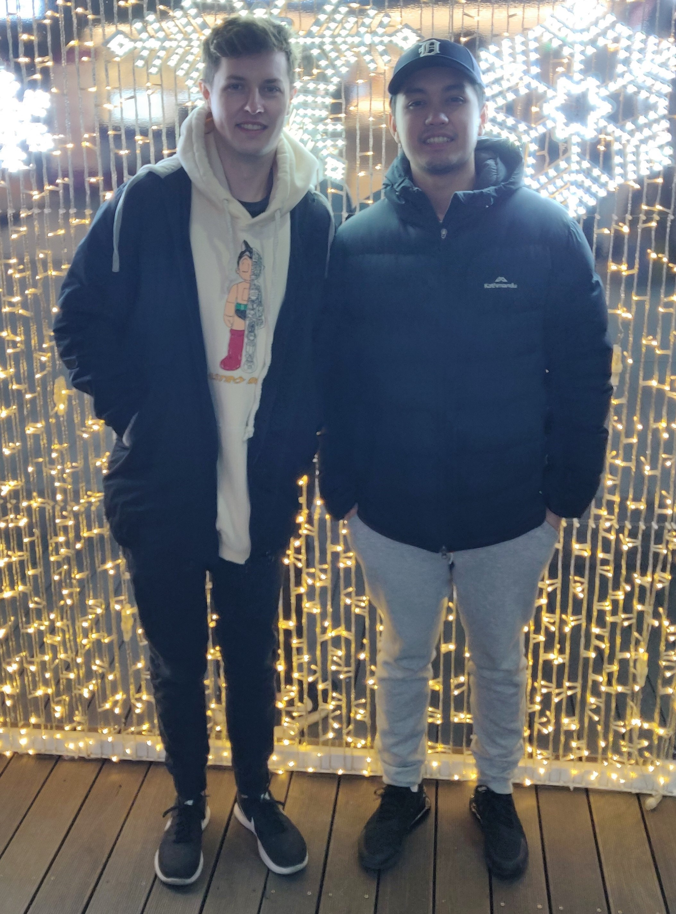
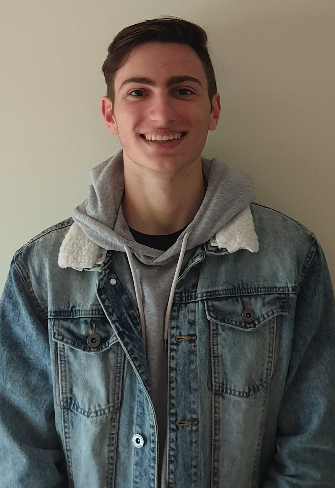

Motivation
What motivated our group to choose such a project was because of how sports such as soccer were cancelled due to the circumstances which have affected the world. Due to this reason we had come up with the idea to create and design an application where people would be able to see the statistics of soccer teams and players using Virtual Reality (VR). We believe that since people were/are unable to expereience these matches, by using VR it would provide a similar and intriguing experience for users as it would make it seem as if they were looking at a player in person.
Aim and Goals
Aim:
In this time, the era of mobile devices, we aim to bring our target audience their favorite sport direct to their phones. Having an application where you can compare players, watch games, and save your favorite players statistics anywhere you go.
Goal 1:
We aim to have a live streaming feature of our application where you can view any game that is being played in any major league around the world. This will give users the opportunity to enjoy their favorite sports where they usually couldnt such as; on the train to work, or sitting in the waiting room waiting for an appointment.
Goal 2:
We also wish to incorporate a fully functional list that allows you to save your favorite players and view their statistics for every season they have ever played, past or present.
Goal 3:
Our third goal is to implement the ability to compare these players with eachother. showing a side by side view of the players career or match statistics. This would allow the users to compare players they wish to choose for their FIFA teams or even their fantasy football teams that they have.
Scope
Our outcomes consisted of our MVF's: Account page, Favorites Page, Player list, Voice Assitance, and the Burger menu. As a whole our application is not put together as we encounted a few issues when attempting to merge the code. However, each individual MVF is working on its own in the emulator provided in the android studio application.
Nathan Kaspers
 |
|
|---|---|
| Personal Info | s3668382 | s3668382@student.rmit.edu.au |
| Interest in the topic | I have had a long standing interest in the topic of soccer as well as mobile apps. this has helped me have a slight investment into this project and allowed me to move forward with my creative and coding learning. |
| Prior Skills | Prior to starting this project i had little to zero knowledge on creating an android app and was excited to learn how to do it |
| Acquired skills | I have gained a basic knowledge of how to use the program Android Studio. -I have also built on my preexisting knowledge of the java language. -I felt like along with these other skills i have also built upon my leadership skills. |
| Project role | My role in this project was as the team leader, I tried my best to get the group collaborating and communicating but communication was lacking throughout. I also worked on the player list MFV and that was one of my main focuses. |
Tom Bakker
|  | |
|---|---|
| Personal Info | s3671963 | s3671963@student.rmit.edu.au |
| Interest in the topic | While not being that interested in the focus of the app(Soccer), the creation and design of the app iteself seemed like a fun learning experience |
| Prior Skills | Basic Java knowledge as well as an understanding of the core concepts of a friendly UX |
| Acquired skills | -Increased Java proficiency -Now know how to use Android Studio although still a lot to learn -Better understanding of how important group dynamics are for projects |
| Project role | Extended Feature: VR (Helping) Minimum Feature: Burger Menu Also tested some others' features to help them find issues and fix them |
Matthew Falzon
|  | |
|---|---|
| Personal Info | s3842548 | s3842548@student.rmit.edu.au |
| Interest in the topic | While being a mild soccer fan i found interest in the design aspect and what kind of app would be created with this topic making it an interesting learning experience |
| Prior Skills | Basic Java knowledge aswell as html and css but no prior experience in building an android app |
| Acquired skills | App creation in Android studio and built upon my java skills. Also getting better at my communication and delegation skills. |
| Project roll | Extended Feature: Comparing players Minimal feautre: Burger Menu Also assisted in finding issues with the join of projects on Android studio. |
Hon Son
 |
|
|---|---|
| Personal Info | s3668382 | s3668382@student.rmit.edu.au |
| Interest in the topic | While I am not that interested in soccer, I like the designing part and the coding part. |
| Prior Skills | A very basic understanding about coding |
| Acquired skills | I gained the basic understanding of the android studio |
| Project roll | Designing and code the login page of the app |
John Usaraga
 |
|
|---|---|
| Personal Info | s3842470 | s3842470@student.rmit.edu.au |
| Interest in the topic | I'm not interested in soccer specifically, however, I was interested in the whole process of creating the application |
| Prior Skills | basic knowledge of coding using Java and Python |
| Acquired skills | some knowledge of how to use Android Studio |
| Project roll | designing and coding the favourites feature of the app |
Minh Hoang
|
|
|---|---|
| Personal Info | s3746869@student.rmit.edu.au |
| Interest in the topic | Code and design are interesting topic |
| Prior Skills | Basic Java skill and UCD |
| Acquired skills | Know more about Android Studio and Importance of group |
| Project roll | Minimun Viable Feature: Voice Assitance |